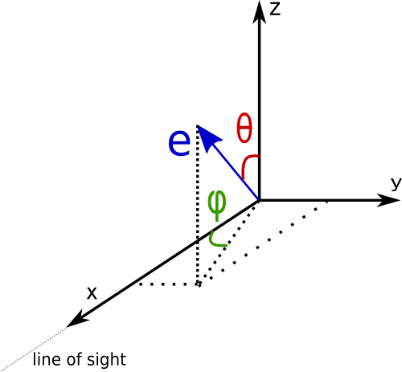

Inverse Compton Tutorial
In this tutorial we will see in some more detail how to set up the radiation fields for the Inverse Compton scattering
for both isotropic and anisotropic case. In the following we assume that fr is an instance of the class Radiation.
GAMERA allows the user to add directly a thermal photon field knowing the temperature and the energy density through the function:
fr.AddThermalTargetPhotons(temperature,energy_density)
The units to be used are Kelvin degrees for the temperature and erg/cm3 for the energy density.
For a more particular usage, it is also possible to add arbitrary photon fields via
fr.AddArbitraryTargetPhotons(photon_array)
where photon_array is an array of tuples (E,photon_density) in units of erg vs erg^-1 cm^-3.
A further possibility is to import a photon field from a file with:
fr.ImportTargetPhotonsFromFile(filename)
where the structure of the file must be energy [eV] vs number density [cm^-3].
As for the other mechanisms, we have to compute the radiative output before accessing the Inverse Compton components.
We remind here to call the function
fr.CalculateDifferentialPhotonSpectrum(e)
where e is the energy range of the photon spectrum we want as a result.
Case 1: Isotropic photon fields
Let’s start with the simple case of a thermal photon field. In principle we can add multiple photon fields. In the default case, when asking for the Inverse Compton component of the gamma ray spectrum, it will be computed on the sum of the photon fields.
fr.GetICSpectrum() # IC spectrum for the sum of all the target photon fields.
fr.GetICSED() # IC SED for the sum of all the target photon fields.
If instead we want to know what is the contribution of each target field to the total Inverse Compton spectrum, we have to
esplicitely specify that before filling the differential photon spectrum. This is done by calling the function
fr.UnsetICFastMode() that forces GAMERA to compute all the single Inverse Compton components.
fr.UnsetICFastMode()
fr.CalculateDifferentialPhotonSpectrum(e)
fr.GetICSpectrum(0) # IC spectrum for the target photon field 0
fr.GetICSED(0) # IC SED for the target photon field 0
Case 2: Anisotropic photon fields ———————————
In this section we will go through the steps to consider anisotropic fields. The first step is to give an angular dependency to the target photon field. There are 2 possibilities:
- anisotropic beam of electrons
- isotropic distribution of electrons
Before going into the details of the 2 cases, here is the geometry used in GAMERA
In the following figure it is illustrated how the angles are defined together with the direction of the electrons (in case 1.) and the direction of the line of sight (always along the x-axis)

so the phi angle goes from 0 to 2*pi and the theta angle from 0 to pi.
If you work in python, the angular dependency can be implemented by filling a numpy.meshgrid:
phi = np.linspace(1.,1.5,20) # angles from 1 to 1.5 radiants divided in 20 bins
theta = np.linspace(0.5,1.,20) # angles from 0.5 to 1 radiant divided in 20 bins
ph_m, th_m = np.meshgrid(phi, theta) # defining the meshgrid
distr = fill_grid(ph_m,th_m) # fill the meshgrid with a user defined function
The filled grid distr needs to be normalized over solid angle by the user (see the example scripts).
Once we have the angular distribution of the photon field, we can complete the geometry of the system.
Anisotropic distribution of electrons
At the moment, this is the default case implemented in GAMERA. The full geometry of the IC scattering in this case is done with the following function:
fr.SetTargetPhotonAnisotropy(target, angles_e, phi, theta, distr)
where target is the index of the target field we want to make anisotropic, angles_e is an array [phi,theta] for
the direction of the electron beam and the other variables are the same as above.
At this point GAMERA will use the angular dependent cross section to compute the IC scattering and the results can be explored with the previous methods (including the unsetting of the fast mode option to retrieve single components).
An example script that produces the plot below can be found here
<img src=anisotropy_distribution.png height=”400”> <img src=SED_iso_aniso.png height=”400”>
Isotropic distribution of electrons
This is a rather recent addition to the code. In case we have an isotropic distribution of electrons, we can follow the same steps as before additionally stating that our electrons are isotropically distributed:
fr.SetElectronsIsotropic()
fr.SetTargetPhotonAnisotropy(target, angles_e, phi, theta, distr)
the first function will set an inner GAMERA variable so that the code will use an isotropic distribution of electrons.
The second function is exactly the same as before, but the variable angles_e will not actually be used in the calculations.
WARNING: currently this implementation is rather slow, so don’t panic if your code takes long time to run. We will try to
speed up the computations.
At the moment the code does not allow to switch back from an isotropic distribution of electrons to an anisotropic one. We would recommend not to mix the two options and use only one of the possibilities at a time. Also in this case holds the same procedure to access single components of the Inverse Compton spectrum. The script linked above has also the line to set up the isotropic electrons needed for this case.
Synchrotron Self Compton process
The Synchrotron Self Compton (abbreviated as SSC) process is that radiation process in which the same particle distribution first produces synchrotron photons and then uses this photon field as target for Inverse Compton scattering.
In GAMERA, the SSC component is obtained via an iterative approach in which the equilibrium solution between the losses in the Synchrotron and IC channel is found.